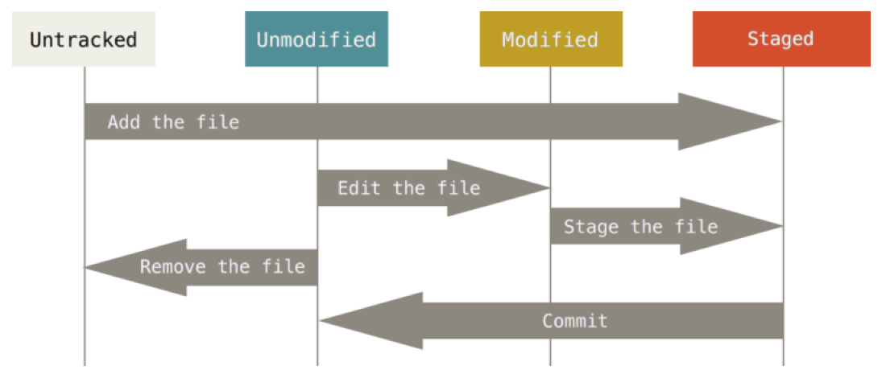

Software Management
Contents
Software Management#
In addition to writing a program for each computing task, knowldge and skills are needed for designing and managing the entire data analysis or simulation procedure, testing and revising the codes, and sharing the data and tools among collaborators.
Unlike commercial software development, research computing often starts from a simple exploratory code created by a single researcher. However, even for a single-person project, it is beneficial to follow the standard practices in software development because.
If your project is successful, it will be succeeded by other members of your lab or the research community world wide.
You, after a few months, do not remember where you put which file, what was this file, or why you wrote this code.
Reference:#
Greg Wilson, et al. (2017). Good enough practices in scientific computing. PLOS Computational Biology, 13(6): e1005510 (https://doi.org/10.1371/journal.pcbi.1005510)
Coding Style#
In writing programs, keep in mind:
Make them modular and aviod duplicate codes.
Give explanation at the beginning of each file/function.
Use file/function/variable names that you can comprehend a year later.
Never write a numeric parameter in an equation; define it as a variable/argument.
Give comments for significant parts/lines of codes.
Turn comment/uncomment into
if-elsefor different modes of operation.Verify your code with a simple input for which the correct output is known.
Prepare documentation even before somebody asks you, as you yourself will need that after a few months.
In some projects, all you need is to download pre-existing tools and apply them to the data. Even in that case, it is better to record the procedure as a script for
avioding/detecting manual errors
reproducibility of the result
re-analysis with new data, tool, or parameters
Scritping#
On Unix-like systems, the common way is a shell script, which is a file containing a series of commands you would type into a terminal.
For a more elaborate processing, a Python script is often preferred.
Version Control System#
Software development is repetitions of coding, testing, and improving. A version control system (VCS) allows
parallel development of parts and re-integration
trace back to previous versions when a problem is detected
Git#
The most popular VCS today is Git, created by Linus Torvalds for developing Linux.
After creating/editing your files, you stage them for management and commit for a certain version.

If git has not been installed, follow one of these to install.
Mac:
Install XCode from the App Store
or install XCode Command Line Tools by
xcode-select --installor install HomeBrew and run
brew install git
Windows:
Install Git for Windows
Detailed documentations can be found at https://git-scm.com/docs
odesim#
As an example of version control, let us take a simple ODE simulator, odesim
%ls odesim
__pycache__/ first.py odesim.py odesim.py~ second.py
%cd odesim
/Users/doya/Dropbox (OIST)/Python/iSciComp/odesim
%cat odesim.py
# odesim.py
# An Ordinary Differential Equation Simulator
# 2022 by Kenji Doya
import numpy as np
from scipy.integrate import odeint
import matplotlib.pyplot as plt
import importlib # import module from string
class odesim():
"""An ODE Simulator"""
time = 0
trun = 10
dt = 0.1
def __init__(self, odename):
"""create a new ODE"""
print('Importing ODE:', odename)
self.ode = importlib.import_module( odename)
importlib.reload(self.ode) # for updated module
self.state = self.ode.initial_state
#self.reset()
plt.ion()
def reset(self):
"""reset the state"""
self.time = 0
self.state = self.ode.initial_state
plt.clf()
def simulate(self):
"""simulate the ODE"""
# +dt/2 to include time+trun
self.t = np.arange(self.time, self.time+self.trun+self.dt/2, self.dt)
self.y = odeint(self.ode.dynamics, self.state, self.t, args=(self.ode.parameters,))
# update the time and state
self.time = self.t[-1]
self.state = self.y[-1,:]
print("t=", self.time, "; state=", self.state)
def plot(self):
"""plot in time"""
plt.plot(self.t, self.y)
plt.xlabel('t'); plt.ylabel('y')
def run(self):
"""simulate the ODE"""
self.simulate()
self.plot()
Here is its example usage
import numpy as np
import matplotlib.pyplot as plt
%matplotlib inline
import odesim
import importlib
#importlib.reload(odesim) # when odesim.py is updated
sim = odesim.odesim('first')
Importing ODE: first
sim.run()
t= 10.0 ; state= [-0.36787947]
sim2 = odesim.odesim('second')
Importing ODE: second
sim2.run()
t= 10.0 ; state= [ 0.52920895 -0.32397961]
Starting a repository#
Let us go to your working folder and start a new repository by git init
%pwd
'/Users/doya/Dropbox (OIST)/Python/iSciComp/odesim'
!git init
Reinitialized existing Git repository in /Users/doya/Dropbox (OIST)/Python/iSciComp/odesim/.git/
This creates an invisible folder .git for book keeping.
%ls -a
./ .git/ __pycache__/ odesim.py second.py
../ .gitignore first.py odesim.py~
# The contents of .git folder
%ls .git
COMMIT_EDITMSG config index objects/
HEAD description info/ refs/
ORIG_HEAD hooks/ logs/
You can check the status by git status
!git status
On branch main
Changes not staged for commit:
(use "git add <file>..." to update what will be committed)
(use "git restore <file>..." to discard changes in working directory)
modified: odesim.py
no changes added to commit (use "git add" and/or "git commit -a")
Staging and Commiting files#
Use git add to add files for tracking.
And then git commit to save a version.
!git add *.py
!git status
On branch main
Changes to be committed:
(use "git restore --staged <file>..." to unstage)
modified: odesim.py
Register the current version by git commit with a message by -m.
!git commit -m "first version"
!git status
[main a121e1f] first version
1 file changed, 7 insertions(+), 5 deletions(-)
On branch main
nothing to commit, working tree clean
You can list files that need not to be tracked in .gitigonore file
!echo '.*\n__*\n*~\n' > .gitignore
!cat .gitignore
!git status
.*
__*
*~
On branch main
nothing to commit, working tree clean
Registering changes#
After editing a file, you can register a new version by git commit.
Try changing a parameter or initial state, e.g., in dynamics/first.py
!git status
On branch main
nothing to commit, working tree clean
Use git add to stage updated files.
!git add first.py
!git status
On branch main
nothing to commit, working tree clean
And the git commit the changes
!git commit first.py -m "first.py updated"
!git status
On branch main
nothing to commit, working tree clean
On branch main
nothing to commit, working tree clean
You can see what was changed by git show.
!git show
commit a121e1fa5fe692dec10c125390d633b23d42a6d9 (HEAD -> main)
Author: Kenji Doya <doya@oist.jp>
Date: Wed Aug 16 22:36:50 2023 +0200
first version
diff --git a/odesim.py b/odesim.py
index 02e7d0e..4d5391b 100644
--- a/odesim.py
+++ b/odesim.py
@@ -20,13 +20,16 @@ class odesim():
print('Importing ODE:', odename)
self.ode = importlib.import_module( odename)
importlib.reload(self.ode) # for updated module
- self.reset()
-
+ self.state = self.ode.initial_state
+ #self.reset()
+ plt.ion()
+
def reset(self):
"""reset the state"""
self.time = 0
- self.state = self.ode.initial_state
-
+ self.state = self.ode.initial_state
+ plt.clf()
+
def simulate(self):
"""simulate the ODE"""
# +dt/2 to include time+trun
@@ -41,7 +44,6 @@ class odesim():
"""plot in time"""
plt.plot(self.t, self.y)
plt.xlabel('t'); plt.ylabel('y')
- plt.show()
def run(self):
"""simulate the ODE"""
You can check the revision history by git log
!git log
commit a121e1fa5fe692dec10c125390d633b23d42a6d9 (HEAD -> main)
Author: Kenji Doya <doya@oist.jp>
Date: Wed Aug 16 22:36:50 2023 +0200
first version
commit 9b97d69bb5a0872bf342a2cba9e53a6ec6c5f590 (myBranch)
Author: Kenji Doya <doya@oist.jp>
Date: Tue Dec 6 12:24:44 2022 +0900
second.py updated
commit 8b01220bd8dfe78f71297e62e962758e4977caa4
Author: Kenji Doya <doya@oist.jp>
Date: Tue Dec 6 12:24:17 2022 +0900
first.py updated
commit 9a1b45a6daceb403255b30febd3b0dc8fb3f58ee
Author: Kenji Doya <doya@oist.jp>
Date: Tue Dec 6 12:22:25 2022 +0900
first version
Branch#
You can create a new branch and checkout a particular branch.
!git branch myBranch
!git checkout myBranch
fatal: a branch named 'myBranch' already exists
Switched to branch 'myBranch'
Make a change, e.g., editing second.py.
And then git add and git commit.
!git add second.py
!git commit -m "second.py updated"
!git status
On branch myBranch
nothing to commit, working tree clean
On branch myBranch
nothing to commit, working tree clean
!git show
commit 9b97d69bb5a0872bf342a2cba9e53a6ec6c5f590 (HEAD -> myBranch)
Author: Kenji Doya <doya@oist.jp>
Date: Tue Dec 6 12:24:44 2022 +0900
second.py updated
diff --git a/second.py b/second.py
index 785645a..2c8638b 100644
--- a/second.py
+++ b/second.py
@@ -15,4 +15,4 @@ def dynamics(y, t, a):
parameters = [-0.1, -1, 0]
# Default initial state
-initial_state = [1, 0]
+initial_state = [-1, 0]
!git log --all --graph
* commit a121e1fa5fe692dec10c125390d633b23d42a6d9 (main)
| Author: Kenji Doya <doya@oist.jp>
| Date: Wed Aug 16 22:36:50 2023 +0200
|
| first version
|
* commit 9b97d69bb5a0872bf342a2cba9e53a6ec6c5f590 (HEAD -> myBranch)
| Author: Kenji Doya <doya@oist.jp>
| Date: Tue Dec 6 12:24:44 2022 +0900
|
| second.py updated
|
* commit 8b01220bd8dfe78f71297e62e962758e4977caa4
| Author: Kenji Doya <doya@oist.jp>
| Date: Tue Dec 6 12:24:17 2022 +0900
|
| first.py updated
|
* commit 9a1b45a6daceb403255b30febd3b0dc8fb3f58ee
Author: Kenji Doya <doya@oist.jp>
Date: Tue Dec 6 12:22:25 2022 +0900
first version
You can go back to a previous branch by checkout.
!git checkout main
!git log --all --graph
Switched to branch 'main'
* commit a121e1fa5fe692dec10c125390d633b23d42a6d9 (HEAD -> main)
| Author: Kenji Doya <doya@oist.jp>
| Date: Wed Aug 16 22:36:50 2023 +0200
|
| first version
|
* commit 9b97d69bb5a0872bf342a2cba9e53a6ec6c5f590 (myBranch)
| Author: Kenji Doya <doya@oist.jp>
| Date: Tue Dec 6 12:24:44 2022 +0900
|
| second.py updated
|
* commit 8b01220bd8dfe78f71297e62e962758e4977caa4
| Author: Kenji Doya <doya@oist.jp>
| Date: Tue Dec 6 12:24:17 2022 +0900
|
| first.py updated
|
* commit 9a1b45a6daceb403255b30febd3b0dc8fb3f58ee
Author: Kenji Doya <doya@oist.jp>
Date: Tue Dec 6 12:22:25 2022 +0900
first version
!git branch
* main
myBranch
You can merge another branche to the current branch by git merge
!git merge myBranch
!git log --all --graph
Already up to date.
* commit a121e1fa5fe692dec10c125390d633b23d42a6d9 (HEAD -> main)
| Author: Kenji Doya <doya@oist.jp>
| Date: Wed Aug 16 22:36:50 2023 +0200
|
| first version
|
* commit 9b97d69bb5a0872bf342a2cba9e53a6ec6c5f590 (myBranch)
| Author: Kenji Doya <doya@oist.jp>
| Date: Tue Dec 6 12:24:44 2022 +0900
|
| second.py updated
|
* commit 8b01220bd8dfe78f71297e62e962758e4977caa4
| Author: Kenji Doya <doya@oist.jp>
| Date: Tue Dec 6 12:24:17 2022 +0900
|
| first.py updated
|
* commit 9a1b45a6daceb403255b30febd3b0dc8fb3f58ee
Author: Kenji Doya <doya@oist.jp>
Date: Tue Dec 6 12:22:25 2022 +0900
first version
GitHub#
GitHub is currently the most popular cloud service for sharing software. It is free for open software.
This is a good platform for sharing programs, or in some cases text data and manuscripts, among collaborators. It is also helpful for a single-person project, for succession by a future member of your lab, for open access after publication, or for yourself after some time.
These are typical steps in contributing to a project in GitHub.
Join as a member of a repository.
Copy the existing files and see how they work.
Make a new branch and add or modify the codes.
After tesing locally, commit the new version.
Open a pull request for other members to test your revision.
Your pull request is merged into the master branch.

See “Hello World” in GitHub Guide for details (https://guides.github.com).
Cloning a repository#
If you just use a copy of a stable software, and not going to contribute your changes, just downloading a zip file is fine.
But if you would congribute to joint development, or catch up with updates, git clone is the better way.
Cloning ComputationalMethods repository#
To download a copy of the repository, run
git clone git@github.com:oist/ComputationalMethods2022.git
You are asked to input the passphrase you set in creating your SSH Key.
This should create a folder ComputationalMethods2022.
%pwd
'/Users/doya/Dropbox (OIST)/Python/iSciComp/odesim'
!git clone git@github.com:oist/ComputationalMethods2022.git
Cloning into 'ComputationalMethods2022'...
Enter passphrase for key '/Users/doya/.ssh/id_ed25519':
%ls
Move into the folder and test odesim.py program.
%cd ComputationalMethods2022
%ls
From the console you can run interactively after reading the module as:
python -i odesim.py
sim = odesim('first')
sim.run()
from odesim import *
sim = odesim('first')
sim.run()
Your branch#
Now make your own branch, check it out, and add your own ODE module.
!git branch myname
!git checkout myname
Make a copy of a dynamics file first.py or second.py, implement your own ODE, and save with a new name, e.g. vdp.py.
Run odesim and confirm that your ODE runs appropriately.
Then you can add and commit your change.
!git status
!git add vdp.py
!git commit -m "adding my model vdp.py"
!git log --graph --oneline --all
Now push your branch to GitHub repository by, e.g.
git push origin myname
!git push origin myname
Check the status on GitHub: https://github.com/oist/ComputationalMethods2022
and make a pull request for the repository administrator to check your updates.
The administrator may reply back with a comment for revision or merge your change to the main branch.
Pulling updates#
While you are working on your local code, the codes on the origial repository may be updated. You may also want to check the branches other people have created.
You can use git pull to reflect the changes in the GitHub to your local repository.
You can use git branch to see what branches are there and git checkout to try with the codes in other branches.
!git pull
!git branch
Optional) In addition to adding a new module, you are welcome to improve the main program odesim.py itself. For example,
add other visualization like a phese plot.
fix any bugs or improve error handling.
add documentation.
…
Software/Data Licenses#
Today, increasingly more journals and agencies request that you make the data and programs publicly accessible for
reproducibility of research results
enable meta-analysis
facilitate reuse of data and programs
You should set an appropriate condition in making your data or program public, to facillitate their use and to keep your (and your organization’s) intellectural property. Points of consideration in making your data/programs public include:
copyright
acknowledgement
revision
re-distribution
commercial use
It is also important to know the licenses of the software you use for your development, as that can limit the way you can use/distribute your programs.
Creative Commons#
Creative Commons (https://creativecommons.org) is an emerging standard using combination of three aspects:
Attribution (BY): request aknowldgement, e.g., citing a paper
NonCommercial (NC): no commercial use
ShareAlike (SA) or NoDerivs (ND): allow modification and re-distribution or not
See https://creativecommons.org/licenses/?lang=en for typical combinations.
GPL, BSD, MIT, Apache, etc.#
In open software community, several types of licensing have been commonly used:
Gnu General Public Licence (GPL): redistribution requires access to source codes in the same license. Called copy left.
BSD and MIT license: do not require source code access or succession of the same license.
Apache License: does not even require the license terms.
Public Domain (CC0): no copyright insisted. Free to use/modify/distribute.
See https://en.wikipedia.org/wiki/Comparison_of_free_and_open-source_software_licenses for further details.
Data Management#
Most research start with obtaining raw data, continues on with a series of pre-processing, visualization and analyses, and complete with paper writing. Handling all different files without confusion and corruption takes some good thoughts and habits.
Keep the raw data and metadata and take back up.
Store data as you wish to see when receiving.
Record all the steps of processing, better with a script.
References:#
Hart EM, et al. (2016). Ten simple rules for digital data storage. PLoS Comput Biol, 12, e1005097. https://doi.org/10.1371/journal.pcbi.1005097
Ouellette F, et al. (2018). A FAIR guide for data providers to maximise sharing of human genomic data. PLoS Comput Biol, 14. https://doi.org/10.1371/journal.pcbi.1005873
Eke DO, Bernard A, Bjaalie JG, Chavarriaga R, Hanakawa T, Hannan AJ, Hill SL, Martone ME, McMahon A, Ruebel O, Crook S, Thiels E, Pestilli F (2021). International data governance for neuroscience. Neuron, 10.1016/j.neuron.2021.11.017. https://doi.org/10.1016/j.neuron.2021.11.017
Always Backup#
As soon as you obtain data, don’t forget to take a backup with appropriate documentation.
For a small scale data, DropBox is an easy solution for data backup and sharing.
At OIST, for storing large scale data, you can use the bucket drive. See: https://groups.oist.jp/it/research-storage
In a Unix like system, rsync is the basic command to take a backup of a folder.
There are options for incremental backup, by searching for new files in the folder and copy them.
Data sharing#
Data sharing is an important emerging issue in the scientific community, as science today is becoming more and more data intensive. In good old days, each researcher did an experiment, gathered data, wrote a paper, and that was the end of the story. Nowadays, each experiment can produce Giga to Tera bytes of data, which are much more than just one researcher to analyze by him/herself. We nee efficient and reliable methods to share data within each lab, across collaboration labs, and the entire research community.
Data Governance#
When making data public, especially human subject data, a good care has to be taken for the privacy. In general
data should be anonymized so that the identity of subject cannot be obtained or inferred.
prior consent must be obtained from the subject regarding the way their data are made public.
Metadata#
Metadata is data about data. It usually includes:
Time and date of creation
Creator or author of the data
Method for creating the data
File format
File size
…
Different research communities have their own standards of metadata, such as
ISO-TC211 for geographic data: https://www.isotc211.org
ISA for biomedical data: https://www.isacommons.org
Following such a standard can help you using common data processing tools, and your data to be found and utilized by more people.
Data File Formats#
It is always better to save your data in a common file format so that they can be read by many data processing tools.
CSV, TSV#
Values separated by comma or tab, in multiple lines like a table. These are still commonly used for simplicity.
XML#
https://www.xml.org Keys and values stored in a form similar to html. Often used to store metadata.
JSON#
https://www.json.org/json-en.html Common in exchanging large data with multiple compnents.
HDF5#
https://www.hdfgroup.org Hierarchical datar format that can also store binary data.
Some domain-specific data formats are based HDF5, such as Neurodata Without Borders (NWB) https://www.nwb.org
Pipeline Tools#
Once your procedures for data processing is determined, such as filtering, visualization, and statistical tests, the sequence should be defined as a script with folders, filenames, and parameters.
A classic way in Unix-like system is shell script, but you can use Python for data processing scripts. There are dedicated packages for data processing pipelines, such as:
scikit-learn.pipeline: https://scikit-learn.org/stable/modules/compose.html
Prefect: https://www.prefect.io
Snakemake: https://snakemake.github.io